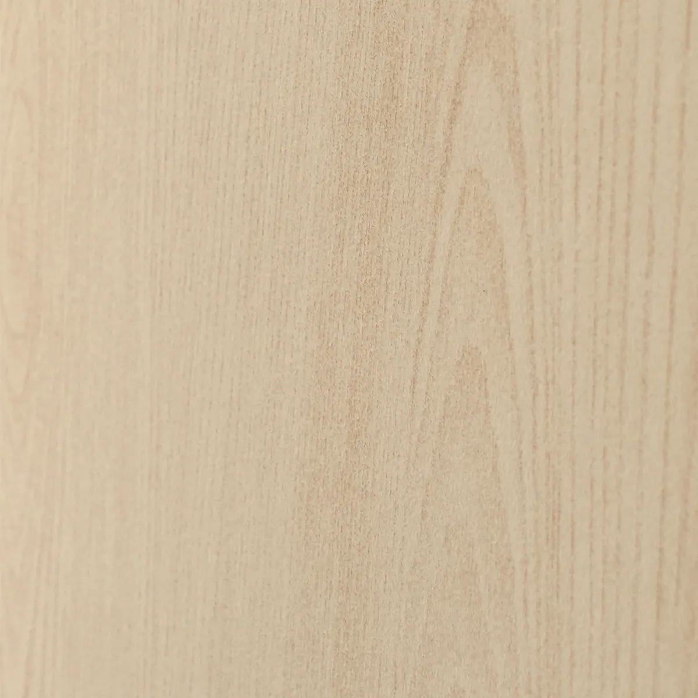
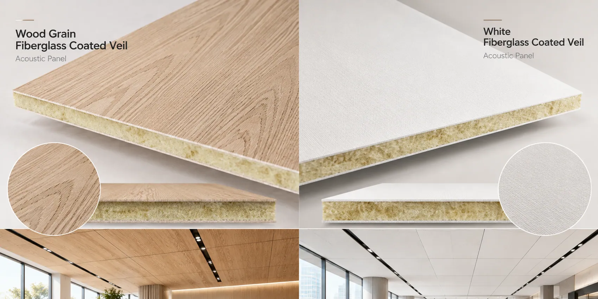
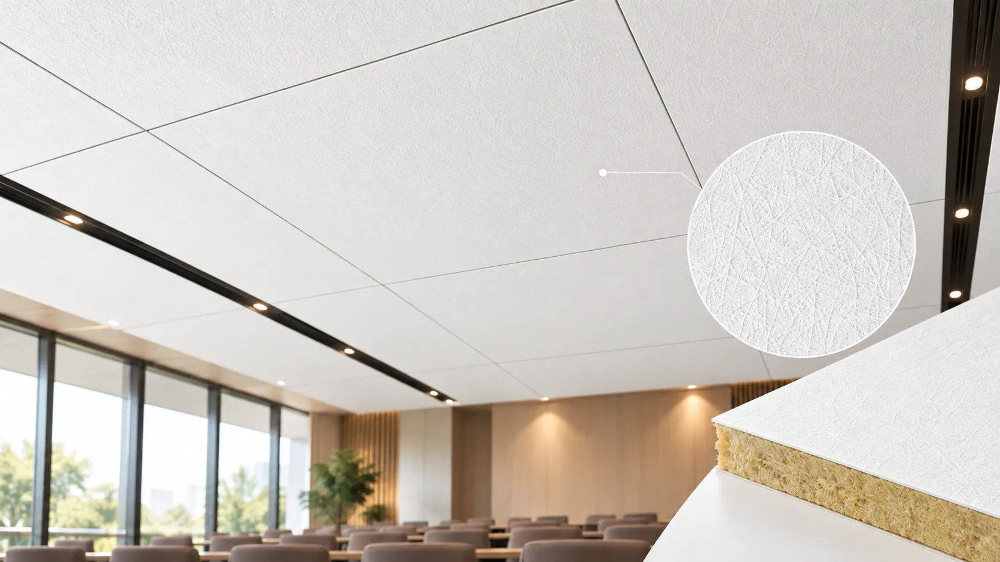
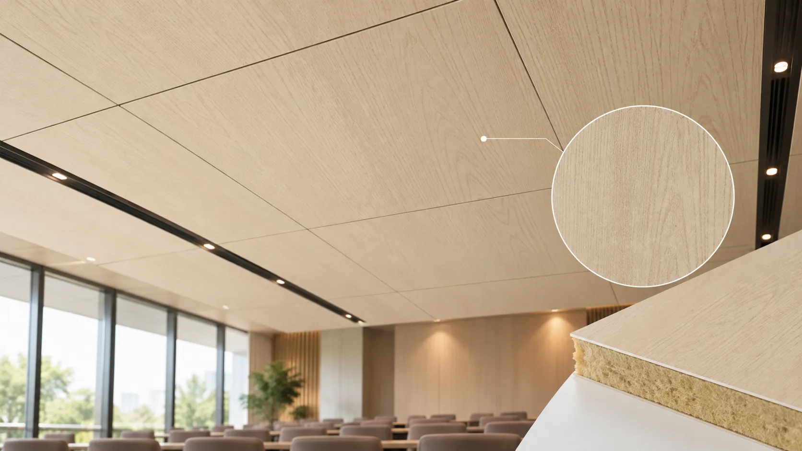
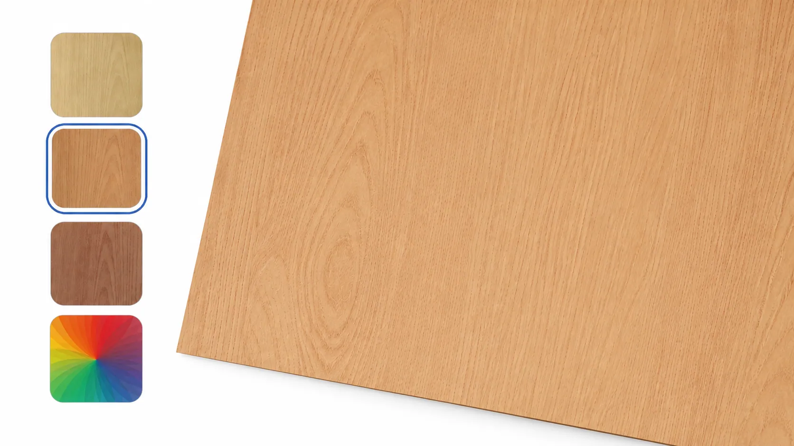
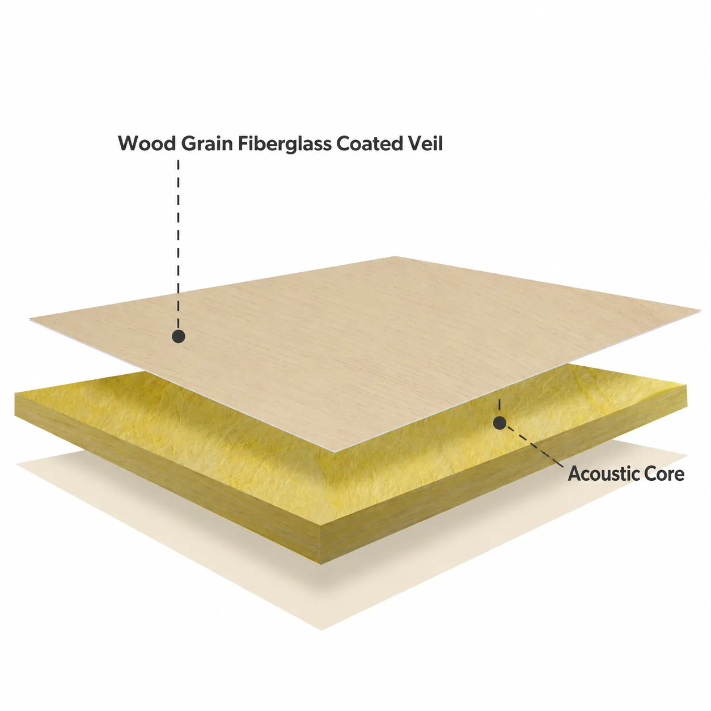
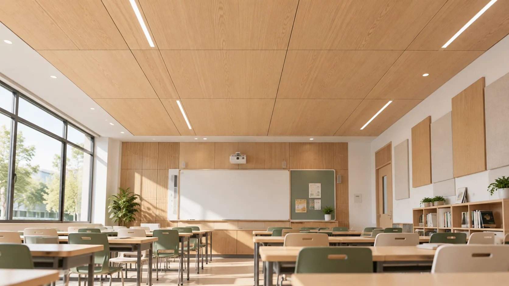
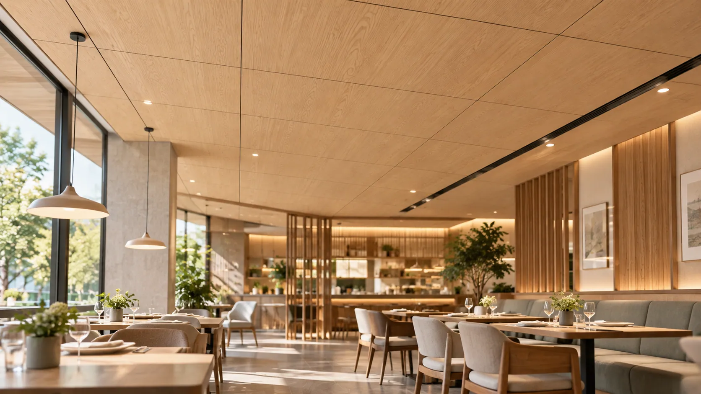
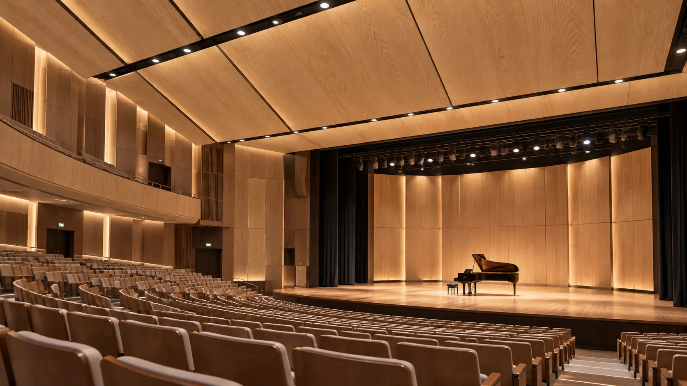

Grain detail
Poorly defined patterns may lack the depth and visual character expected from a wood-inspired finish.
DECORATIVE FIBERGLASS FACING SOLUTIONS
The Warmth of Wood. Designed for Acoustic Performance.
A lightweight fiberglass veil with a wood grain coating for acoustic ceilings and walls. Evaluate pattern and color with your core and production process.

THE DETAILS DEFINE THE DESIGN
A coordinated wood-look ceiling or wall depends on more than the color of an individual sample.
Poorly defined patterns may lack the depth and visual character expected from a wood-inspired finish.
Uncontrolled color changes can become noticeable across a large installation.
Grain direction and pattern placement should coordinate between adjoining panels.
Select the decorative treatment with appropriate airflow characteristics for the intended finished-panel performance.

DESIGNED FOR DECORATIVE FREEDOM
The wood grain coating supplies the pattern; a lightweight fiberglass veil supports acoustic panel manufacturing.
Coating and pattern application reproduce selected grain details and tonal variation.
Wood-inspired colors, grain styles and surface finishes can be discussed for architectural requirements.
Evaluate facing characteristics for the acoustic core and intended sound absorption requirements.
The fiberglass substrate supports handling, cutting, converting and lamination.
SEE THE DIFFERENCE
Review samples under the same lighting to compare grain detail, color and surface appearance.

Basic color coverage may not provide the grain detail or visual depth required for a wood-inspired interior.

A refined wood-look surface on a lightweight fiberglass substrate for evaluation with acoustic panels.

Selectable colors and patterns adapt the decorative appearance to different architectural designs.
HOW IT WORKS
The facing forms the visible surface of acoustic ceiling and wall panels, with a wood-inspired appearance instead of a solid wood layer.

A stable, lightweight fiberglass veil carries the decorative coating, pattern and selected color.
The acoustic core provides the primary sound-absorbing structure of the finished panel.
The decorative facing and acoustic core should be evaluated as a complete panel system to achieve the desired balance between surface appearance, sound absorption, and production compatibility.
FIND YOUR DECORATIVE SOLUTION
Match the decorative tone to panel layout, surrounding materials and architectural appearance.
Soft tones for bright classrooms, libraries, offices and educational interiors.
A versatile wood-look direction for meeting rooms, public spaces, commercial interiors and hospitality settings.
Deeper tones for theaters, auditoriums and other interiors requiring a richer decorative appearance.
Colors, patterns and selected surface characteristics remain subject to design and manufacturing feasibility.
TECHNICAL INFORMATION
Confirm the facing grade and decorative finish against the acoustic core, design requirements and manufacturing process.
| Parameter | Specification |
|---|---|
| Product | Wood Grain Fiberglass Coated Veil |
| Base Material | Fiberglass Veil |
| Surface Treatment | Decorative Wood Grain Coating |
| Color | Customizable Wood-Inspired Colors |
| Surface Pattern | Customizable Wood Grain Designs |
| Surface Finish | Decorative, Fine Texture |
| Weight | Grade-Dependent / Customizable |
| Roll Width | Customizable |
| Air Permeability | Grade-Dependent |
| Compatible Core | Mineral Wool / Glass Wool |
| Supply Form | Rolls |
| Customization | Width, Weight, Color, Pattern & Coating Properties |
| Fire Performance | Test Documentation Available for Applicable Grades |
| VOC Characteristics | Grade-Dependent; Test Documentation on Request |
Technical specifications, decorative finishes, test results, and available customization options vary by product grade. Contact GRECHO for detailed technical data, sample availability, and applicable test documentation.
APPLICATIONS
Select the finish with the full panel's acoustic and environmental requirements in view.
Wood-look ceilings and walls can be evaluated with suitable sound-absorbing cores for coordinated reading and learning interiors.

A lightweight decorative direction for mineral wool and glass wool ceilings without using solid wood as the visible surface.

Evaluate the selected facing and finished panel for the intended cleaning, moisture and acoustic conditions.

Coordinate colors and patterns with the architectural design and the panel's intended acoustic response.
FROM SAMPLE TO PRODUCTION
Use representative lighting and your own core, equipment and production process.
Share the core, preferred grain, colors, panel dimensions and technical targets.
Compare grain patterns, tones, texture and visual consistency under representative lighting.
Test the facing with the lamination process, core, cutting equipment and finished panel structure.
Agree the design, facing grade, roll dimensions, coating and production requirements.
FAQ
It can. Coating structure and airflow resistance influence the facing's acoustic interaction. Select and test it with the acoustic core for the intended panel performance.
It can be considered for decorative acoustic panels. Fire classification, indoor emissions, durability, and other applicable requirements should be verified for the selected product grade and finished system.
Selected wood-inspired colors, grain patterns and surface characteristics can be discussed, subject to design and manufacturing feasibility.
LET'S FIND YOUR SOLUTION
Discuss samples and a facing grade for your acoustic panel, preferred grain and technical requirements.